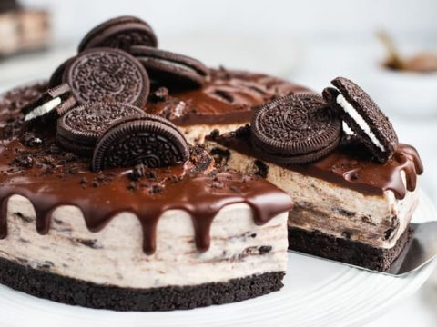

Oreo cheesecake

A dessert is a usually sweet course
or dish (as of pastry or ice cream)
usually served at the end of a meal.
This is the recipe for a delicious Oreo cheesecake,
big enough to share with family or friends!
1 (18.25 ounce) package devil's food chocolate cake mix.
4 (1 ounce) squares BAKER'S Semi-Sweet Chocolate.
¼ cup butter.
1 (8 ounce) package PHILADELPHIA Cream Cheese, softened.
½ cup sugar.
2 cups thawed COOL WHIP Whipped Topping.
12 OREO Cookies, coarsely crushed.
Heat oven to 350 degrees F.
Prepare cake batter and bake in 2 (9-inch) round pans
as directed on package. Cool cakes in pans 10 min.
Invert onto wire racks; gently remove pans.
Cool cakes completely.
Microwave chocolate and butter in small microwaveable bowl on HIGH 2 min.
or until butter is melted. Stir until chocolate is completely melted.
Cool 5 min. Meanwhile, beat cream cheese and sugar in large bowl with mixer
until blended. Gently stir in COOL WHIP and crushed cookies.
Place 1 cake layer on plate, spread with cream cheese mixture.
Top with remaining cake layer. Spread top with chocolate glaze;
let stand 10 min. or until firm. Keep refrigerated.